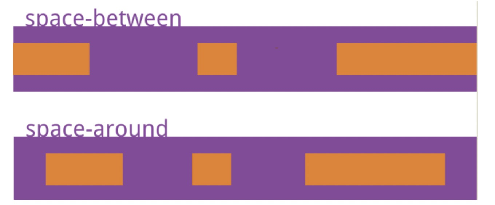

介绍下 BFC 及其应用
块级格式化上下文 Block Formatting Context，决定元素的内容如何渲染以及与其他元素的关系。
触发 BFC 的方式有很多，常见的有：
- 设置浮动
- overflow 设置为 auto、scroll、hidden
- positon 设置为 absolute、fixed
规则：
- BFC 有隔离作用，内部元素不受外部元素影响，反之亦然。
- 一个元素只能存在于一个 BFC 中，如果能同时存在于两个 BFC 中，那么就违反了 BFC 的隔离原则。
- BFC 内的元素按正常流排列，元素间的间隙由元素外边距控制。
- BFC 中的内容不会与外面的浮动元素重叠。
- 计算 BFC 的高度需要包括 BFC 内的浮动子元素的高度。
常见的 BFC 应用有：
- 解决浮动元素令父元素高度坍塌的问题
- 解决非浮动元素被浮动元素覆盖问题
- 解决外边距垂直方向重合的问题
介绍下 BFC、IFC、GFC 和 FFC
- BFC：块级格式上下文，指的是一个独立的布局环境，BFC 内部的元素布局与外部互不影响。
- IFC：行内格式化上下文，将一块区域以行内元素的形式来格式化。
- GFC：网格布局格式化上下文，将一块区域以 grid 网格的形式来格式化
- FFC：弹性格式化上下文，将一块区域以弹性盒的形式来格式化
flex 布局如何使用
指定容器 display: flex 即可。
容器有以下属性：flex-direction，flex-wrap，flex-flow，justify-content，align-items，align-content。
- flex-direction 属性决定主轴的方向；
- flex-wrap 属性定义，如果一条轴线排不下，如何换行；
- flex-flow 属性是 flex-direction 属性和 flex-wrap 属性的简写形式，默认值为 row nowrap；
- justify-content 属性定义了项目在主轴上的对齐方式。
- align-items 属性定义项目在交叉轴上如何对齐。
- align-content 属性定义了多根轴线的对齐方式。如果项目只有一根轴线，该属性不起作用。
项目（子元素）也有一些属性：order，flex-grow，flex-shrink，flex-basis，flex，align-self。
- order 属性定义项目的排列顺序。数值越小，排列越靠前，默认为 0。
- flex-grow 属性定义项目的放大比例，默认为 0，即如果存在剩余空间，也不放大。
- flex-shrink 属性定义了项目的缩小比例，默认为 1，即如果空间不足，该项目将缩小。
- flex-basis 属性定义了在分配多余空间之前，项目占据的主轴空间（main size）。
- flex 属性是 flex-grow, flex-shrink 和 flex-basis 的简写，默认值为 0 1 auto。后两个属性可选。
- align-self 属性允许单个项目有与其他项目不一样的对齐方式，可覆盖 align-items 属性。默认值为 auto，表示继承父元素的 align-items 属性，如果没有父元素，则等同于 stretch。
4. 怎么让一个 div 水平垂直居中
element.style {
position: absolute;
left: 50%;
top: 50%;
transform: translate3d(-50%,-50%,0);
}
5. 分析比较 opacity: 0、visibility: hidden、display: none 优劣和适用场景。
- 结构：
- display:none: 会让元素完全从渲染树中消失，渲染的时候不占据任何空间, 不能点击
- visibility: hidden:不会让元素从渲染树消失，渲染元素继续占据空间，只是内容不可见，不能点击
- opacity: 0: 不会让元素从渲染树消失，渲染元素继续占据空间，只是内容不可见，可以点击
- 继承：
- display: none 和 opacity: 0：是非继承属性，子孙节点消失由于元素从渲染树消失造成。
- visibility: hidden：是继承属性，子孙节点消失由于继承了 hidden，通过设置 visibility: visible;可以让子孙节点显式。
- 性能：
- display：none : 修改元素会造成文档回流,读屏器不会读取 display: none 元素内容，性能消耗较大
- visibility：hidden: 修改元素只会造成本元素的重绘,性能消耗较少读屏器读取 visibility: hidden 元素内容
- opacity：0 ： 修改元素会造成重绘，性能消耗较少
6. 已知如下代码，如何修改才能让图片宽度为 300px ？注意下面代码不可修改。
<img src="1.jpg" style="width:480px!important;”>
- transform: scale(0.625) 按比例缩放图片；
- 利用 CSS 动画的样式优先级高于 !important 的特性
7. 如何用 css 或 js 实现多行文本溢出省略效果，考虑兼容性
css 方式
display: -webkit-box;
-webkit-box-orient: vertical;
-webkit-line-clamp: 3; //行数
overflow: hidden;
js 方式
- 使用 split + 正则表达式将单词与单个文字切割出来存入 words
- 加上 ‘…’
- 判断 scrollHeight 与 clientHeight，超出的话就从 words 中 pop 一个出来
8. 居中为什么要使用 transform（为什么不使用 marginLeft/Top）
top/left 属于布局属性，该属性的变化会导致重排（reflow/relayout），transform 属于合成属性（composite property），对合成属性进行 transition/animation 动画将会创建一个合成层（composite layer），这使得被动画元素在一个独立的层中进行动画。
9. 介绍下粘性布局（sticky）
在屏幕范围（viewport）时该元素的位置并不受到定位影响（设置是 top、left 等属性无效），当该元素的位置将要移出偏移范围时，定位又会变成 fixed，根据设置的 left、top 等属性成固定位置的效果。
sticky 属性值有以下几个特点：
- 该元素并不脱离文档流，仍然保留元素原本在文档流中的位置。
- 当元素在容器中被滚动超过指定的偏移值时，元素在容器内固定在指定位置。亦即如果你设置了 top: 50px，那么在 sticky 元素到达距离相对定位的元素顶部 50px 的位置时固定，不再向上移动。
- 元素固定的相对偏移是相对于离它最近的具有滚动框的祖先元素，如果祖先元素都不可以滚动，那么是相对于 viewport 来计算元素的偏移量
10. 说出 space-between 和 space-around 的区别？
其实就是一个边距的区别，按水平布局来说，space-between是两端对齐，在左右两侧没有边距，而space-around是每个 子项目左右方向的 margin 相等，所以两个 item 中间的间距会比较大。

11. CSS3 中 transition 和 animation 的属性分别有哪些
transition 过渡动画：
- transition-property：指定过渡的 CSS 属性
- transition-duration：指定过渡所需的完成时间
- transition-timing-function：指定过渡函数
- transition-delay：指定过渡的延迟时间
animation 关键帧动画：
- animation-name：指定要绑定到选择器的关键帧的名称
- animation-duration：动画指定需要多少秒或毫秒完成
- animation-timing-function：设置动画将如何完成一个周期
- animation-delay：设置动画在启动前的延迟间隔
- animation-iteration-count：定义动画的播放次数
- animation-direction：指定是否应该轮流反向播放动画
- animation-fill-mode：规定当动画不播放时（当动画完成时，或当动画有一个延迟未开始播放时），要应用到元素的样式
- animation-play-state：指定动画是否正在运行或已暂停
13. 层叠上下文
层叠顺序

17. 介绍下 positon 属性
position 属性主要用来定位，常见的属性值如下：
absolute绝对定位，相对于static定位以外的第一个父元素进行定位。relative相对定位，相对于其自身正常位置进行定位。fixed固定定位，相对于浏览器窗口进行定位。static默认值。没有定位，元素出现在正常的流中。inherit规定应该从父元素继承 position 属性的值。sticky粘性定位，当元素在容器中被滚动超过指定的偏移值时，元素在容器内固定在指定位置。
18. 如何用 CSS 实现一个三角形
div{
width: 0;
height: 0;
border: 10px solid red;
border-top-color: transparent;
border-left-color: transparent;
border-right-color: transparent;
}
19. 如何实现一个自适应的正方形
方法 1：利用 CSS3 的 vw 单位
vw 会把视口的宽度平均分为 100 份
.square {
width: 10vw;
height: 10vw;
background: red;
}
方法 2：利用 margin 或者 padding 的百分比计算是参照父元素的 width 属性
.square {
width: 10%;
padding-bottom: 10%;
height: 0; // 防止内容撑开多余的高度
background: red;
}
20. 如何实现三栏布局
.container{
display: flex;
}
.left{
flex-basis:200px;
background: green;
}
.main{
flex: 1;
background: red;
}
.right{
flex-basis:200px;
background: green;
}
21. import 和 link 区别
- 从属关系区别
@import是 CSS 提供的语法规则，只有导入样式表的作用；link是 HTML 提供的标签，不仅可以加载 CSS 文件，还可以定义 RSS、rel 连接属性等。
- 加载顺序区别
加载页面时，link标签引入的 CSS 被同时加载；@import引入的 CSS 将在页面加载完毕后被加载。
- 兼容性区别
@import是 CSS2.1 才有的语法，故只可在 IE5+ 才能识别；link 标签作为 HTML 元素，不存在兼容性问题。
- DOM 可控性区别
可以通过 JS 操作 DOM ，插入link标签来改变样式；由于 DOM 方法是基于文档的，无法使用@import的方式插入样式。
23. 清除浮动的方法
- clear 清除浮动（添加空 div 法）在浮动元素下方添加空 div，并给该元素写 css 样式： {clear:both;height:0;overflow:hidden;}
- 给浮动元素父级设置高度
- 父级同时浮动（需要给父级同级元素添加浮动）
- 父级设置成 inline-block，其 margin: 0 auto 居中方式失效
- 给父级添加 overflow:hidden 清除浮动方法
- 万能清除法 after 伪类清浮动（现在主流方法，推荐使用）
28. 如何触发重排和重绘？
任何改变用来构建渲染树的信息都会导致一次重排或重绘：
- 添加、删除、更新 DOM 节点
- 通过 display: none 隐藏一个 DOM 节点-触发重排和重绘
- 通过 visibility: hidden 隐藏一个 DOM 节点-只触发重绘，因为没有几何变化
- 移动或者给页面中的 DOM 节点添加动画
- 添加一个样式表，调整样式属性
- 用户行为，例如调整窗口大小，改变字号，或者滚动。
29. 重绘与重排的区别？
- 重排: 部分渲染树（或者整个渲染树）需要重新分析并且节点尺寸需要重新计算，表现为重新生成布局，重新排列元素
- 重绘: 由于节点的几何属性发生改变或者由于样式发生改变，例如改变元素背景色时，屏幕上的部分内容需要更新，表现为某些元素的外观被改变
单单改变元素的外观，肯定不会引起网页重新生成布局，但当浏览器完成重排之后，将会重新绘制受到此次重排影响的部分
重排和重绘代价是高昂的，它们会破坏用户体验，并且让 UI 展示非常迟缓，而相比之下重排的性能影响更大，在两者无法避免的情况下，一般我们宁可选择代价更小的重绘。
『重绘』不一定会出现『重排』，『重排』必然会出现『重绘』。
30. 如何优化图片
- 对于很多装饰类图片，尽量不用图片，因为这类修饰图片完全可以用 CSS 去代替。
- 对于移动端来说，屏幕宽度就那么点，完全没有必要去加载原图浪费带宽。一般图片都用 CDN 加载，可以计算出适配屏幕的宽度，然后去请求相应裁剪好的图片。
- 小图使用 base64 格式
- 选择正确的图片格式：
- 对于能够显示 WebP 格式的浏览器尽量使用 WebP 格式。因为 WebP 格式具有更好的图像数据压缩算法，能带来更小的图片体积，而且拥有肉眼识别无差异的图像质量，缺点就是兼容性并不好
- 小图使用 PNG，其实对于大部分图标这类图片，完全可以使用 SVG 代替
- 照片使用 JPEG
33. 如何在页面上实现一个圆形的可点击区域？
border-radius:50%;
34. 什么是渐进式渲染（progressive rendering）？
- 图片懒加载——页面上的图片不会一次性全部加载。当用户滚动页面到图片部分时，JavaScript 将加载并显示图像。
- 确定显示内容的优先级（分层次渲染）——为了尽快将页面呈现给用户，页面只包含基本的最少量的 CSS、脚本和内容，然后可以使用延迟加载脚本或监听
DOMContentLoaded/load事件加载其他资源和内容。
35. CSS3 新增了那些东西？
CSS3 新增东西众多，这里列举出一些关键的新增内容：
- 选择器
- 盒子模型属性：border-radius、box-shadow、border-image
- 背景：background-size、background-origin、background-clip
- 文本效果：text-shadow、word-wrap
- 颜色：新增 RGBA，HSLA 模式
- 渐变：线性渐变、径向渐变
- 字体：@font-face
- 2D/3D 转换：transform、transform-origin
- 过渡与动画：transition、@keyframes、animation
- 多列布局
- 媒体查询
36. 我想实现一根只有 1px 的长线怎么实现?
.line {
width: 100%;
height: 1px;
overflow: hidden;
font-size: 0px;
border-bottom: dashed 1px #ccc;
}
45. 什么是响应式设计
响应式设计简而言之，就是一个网站能够兼容多个终端——而不是为每个终端做一个特定的版本。
优点：
- 面对不同分辨率设备灵活性强
- 能够快捷解决多设备显示适应问题
缺点：
兼容各种设备工作量大，效率低下
代码累赘，会出现隐藏无用的元素，加载时间加长
其实这是一种折中性质的设计解决方案，多方面因素影响而达不到最佳效果
一定程度上改变了网站原有的布局结构，会出现用户混淆的情况
具体步骤：
- 第一步：meta 标签
为了适应屏幕，多数的移动浏览器会把 HTML 网页缩放到设备屏幕的宽度。你可以使用 meta 标签的 viewport 属性来设置。下面的代码告诉浏览器使用设备屏幕宽度作为内容的宽度，并且忽视初始的宽度设置。这段代码写在 <head>里面
<meta name="viewport" content="width=device-width, initial-scale=1.0">
- 第二步：HTML 结构
这个例子里面，有 header、content、sidebar 和 footer 等基本的网页布局。
header 有固定的高 180px，content 容器的宽是 600px，sidebar 的宽是 300px。
- 第三步：媒体查询
CSS3 media query 响应式网页设计的关键。它像一个 if 语句，告诉浏览器如何根据特定的屏幕宽口来加载网页。
下面是一个媒体查询示例代码：
如果文档宽度小于 300 像素则修改背景演示(background-color)
@media screen and (max-width: 300px) {
body {
background-color:lightblue;
}
}
48. px 和 em 的区别
- px 即 pixel 像素，是相对于屏幕分辨率而言的，是一个相对绝对单位，即在同一设备上每个设备像素所代表的物理长度是固定不变的（绝对性），但在不同设备间每个设备像素所代表的物理长度是可以变化的（相对性）。
- em 一个相对单位，不是一个固定的值，来源于纸张印刷业，在 web 领域它指代基准字号，浏览器默认渲染文字大小是 16px ，它会继承计算后的父级元素的 font-size。
55. less、sass 是什么？为什么要用它？
Less 和 Sass 被称之为 CSS 预处理器。
CSS 预处理器可以为 CSS 增加变编程特性，通过编译器将使用新语法的文件输出为一个 CSS 文件，解决 CSS 难以复用、代码冗余、可维护性低的缺点。常见的预处理器有 less、sass、stylus。
使用他们来书写 CSS 代码可以更符合编程思维、简化代码、提高代码重用、便于维护。
57. 你怎么处理页面兼容性问题？
- 利用 CSS 重置技术初始化默认样式
- 针对不同浏览器采用不同的解决方案（工程化）
60. display：inline-block 在什么情况下会产生间隙？
空隙产生的原因
元素被当成行内元素排版的时候，元素之间的空白符（空格、回车换行等）都会被浏览器处理，根据 white-space 的处理方式（默认是 normal，合并多余空白），原来 HTML 代码中的回车换行被转成一个空白符，在字体不为 0 的情况下，空白符占据一定宽度，所以 inline-block 的元素之间就出现了空隙。
这些元素之间的间距会随着字体的大小而变化，例如：当行内元素 font-size:16px 时，间距为 8px。
解决方法
1.将前一个标签结束符和后一个标签开始符写在同一行
<div class="child">child1</div><div class="child">child2</div>
2.为父元素中设置 font-size:0；
62. 什么是选择器？有哪些选择器？
选择器决定将样式应用在哪个或哪些元素身上。
- 元素选择器：例如 div{…} p{…}
- id 选择器： 例如 #box{…}
- 类选择器： 例如 .box{…}
- 属性选择器：[href=”#”]{…}
- 通配：*{…}
- 组合（并集）选择器：div,p,a,.main{…}
- 交集选择器：input[type=”text”]{…}
- 后代选择器：header nav{…}
- 子级选择器： ul>li{…}
- 伪类选择器：
- :nth-child(num){…}
- :nth-child(odd){…}
- :nth-child(even){…}
- :nth-of-type{…}
- :first-child{…}
- :last-child{…}
- only-child{…}
- a:link{…}
- a:visited{…}
- :hover{…}
- a:active{…}
- 伪元素选择器：
- ::before{…}
- ::after{…}
- ::first-letter{…}
- ::first-line{…}
65. CSS 的计算属性知道吗
即 calc( ) 函数，主要用于指定元素的长度，支持所有 CSS 长度单位，运算符前后都需要保留一个空格。
比如： width: calc(100% - 50px);
66. 为何 CSS 放在 HTML 头部？
为了尽早让浏览器拿到 CSS 并且生成 CSSOM，然后与 HTML 一次性生成最终的 RenderTree，渲染一次即可。如果放在 HTML 底部，会出现渲染卡顿的现象影响性能和用户体验。
67. background-size 有哪 4 种值类型？
- length：设置背景图片高度和宽度。第一个值设置宽度，第二个值设置的高度。如果只给出一个值，第二个是设置为 auto(自动)
- percentage：将计算相对于背景定位区域的百分比。第一个值设置宽度，第二个值设置的高度。如果只给出一个值，第二个是设置为“auto(自动)”
- cover：此时会保持图像的纵横比并将图像缩放成将完全覆盖背景定位区域的最小大小。
- contain：此时会保持图像的纵横比并将图像缩放成将适合背景定位区域的最大大小。
76. position 的值 relative 和 absolute 的定位原点是？
- absolute：生成绝对定位的元素，定位原点是离自己这一级元素最近的一级 position 设置为 absolute 或者 relative 的父元素的左上角为原点的。
- relative：生成相对定位的元素，定位原点是元素本身所在位置。
77. 当 margin-top、padding-top 的值是百分比时，分别是如何计算的？
A. 相对父级元素的 height，相对自身的 height
B. 相对最近父级块级元素的 height，相对自身的 height
C. 相对父级元素的 width，相对自身的 width
D. 相对最近父级块级元素的 width，相对最近父级块级元素的 width
D
可以对元素的 margin 设置百分数，百分数是相对于父元素的 width 计算，不管是 margin-top/margin-bottom 还是 margin-left/margin-right。（padding 同理）
如果没有为元素声明 width，在这种情况下，元素框的总宽度包括外边距取决于父元素的 width，这样可能得到“流式”页面，即元素的外边距会扩大或缩小以适应父元素的实际大小。如果对这个文档设置样式，使其元素使用百分数外边距，当用户修改浏览窗口的宽度时，外边距会随之扩大或缩小。
78. 伪元素 :before :after 的作用？
特有的 content 可用于在 CSS 中向元素的头部或尾部添加内容，常用于制作小图标。
80. transition 和 animation 的区别以及应用场景？
- 区别：
- 触发条件不同。transition 通常需要交互，由事件触发。animation 则与 gif 动图差不多，立即播放。
- 循环。animation 可以设定循环次数。
- 精确性。animation 可以设定每一帧的样式和时间，其中的每一帧都可以有单独的变化。而 transition 中的所有样式都是一起变化的。
- 与 JS 的交互。使用 JS 去操作时，transition 更多。
- 应用场景：
- 如果需要灵活定制多帧以及循环，使用 animation 。
- 如果只是简单的从 XX 样式变到 XX 样式，两者皆可。
- 如果要使用 JS 设定动画，使用 transition 。
83. 谈一谈 CSS 中的 2D 转换。
即 transform，能够对元素进行移动、缩放、拉伸。
- translate(x, y): 元素从当前位置根据给定的 x 坐标 y 坐标移动。
- rotate(angle): 元素顺时针旋转指定的角度，若为负值则逆时针旋转。
- scale(num, num): 放大或缩小元素。
- skew(angle, angle): 围绕 X Y 轴进行转动。
84. 谈一谈 CSS3 多列属性是什么？以及其使用场景
多列布局是 CSS3 新增的一组属性，常用的属性如下：
- column-count: num: 规定元素被分隔的列数。
- column-gap: num; 规定列之间的间隔。
- column-rule: width style color: 规定列之间的样式规则。
85. vw、vh 是什么？
vw 和 vh 是 CSS3 新单位，即 view width 可视窗口宽度 和 view height 可视窗口高度。1vw 就等于可视窗口宽度的百分之一，1vh 就等于可视窗口高度的百分之一。
87. 页面布局有几种方式？
- 固定宽度布局：为网页设置一个固定的宽度，通常以 px 做为长度单位，常见于 PC 端网页。
- 流式布局：为网页设置一个相对的宽度，通常以百分比做为长度单位。
- 栅格化布局：将网页宽度人为的划分成均等的长度，然后排版布局时则以这些均等的长度做为度量单位，通常利用百分比做为长度单位来划分成均等的长度。
- 响应式布局：通过检测设备信息，决定网页布局方式，即用户如果采用不同的设备访问同一个网页，有可能会看到不一样的内容，一般情况下是检测设备屏幕的宽度来实现。
88. 什么是流式布局？
即 Fluid Layout 。这种布局方式在前端开发的早期历史上用来应对不同尺寸的 PC 屏幕，那时的屏幕尺寸差异不会太大，在当今的移动设备开发也常用。
流式布局是页面元素宽度依照屏幕分辨率进行适配调整，但整体布局不变，其代表就是栅格系统（网格布局）。划分区域的尺寸使用百分比（通常也会搭配 min-_ 或 max-_）。例如设置网页主体宽度为 85%，min-width 为 960px，图片也做类似的处理 width: 100%; max-width 设置为图片本身尺寸以防止被拉伸变形。
布局特点在于：屏幕分辨率发生变化时布局不变元素尺寸变。但缺点也很明显，如果屏幕尺寸跨度太大，那么在相对其原始设计而言过大过小的屏幕上就不能正常显示。
89. 什么是静态布局？
即 Static Layout。传统的 web 设计，网页中所有元素的尺寸一律使用 px 作为单位。
布局特点在于：无论浏览器尺寸为多少，布局始终按照最初的设计稿布局来显示。常规的 PC 网站都是使用的静态（定宽度）布局，如果浏览器小于这个宽度则出现滚动条，如果浏览器大于这个宽度则内容居中或添加背景。这些设计方式是最常见的。
在 PC 中，居中布局，所有样式使用一个绝对宽度（定宽）适配当今主流屏幕宽度。在移动设备中，另外建立移动网站，单独设计一个布局，使用不同的域名，比如 wap. 或 m.。
这种布局方案对于 UI 设计师和前端开发人员来说都是最简单、没有兼容性问题的。但缺点显而易见，需要做两次开发。当前大部门门户网站、企业宣传站点都采用了这种布局方式。
90. 什么是自适应布局？什么是响应式布局？
自适应布局
即 Adaptive Layout ，可以把自适应布局看作是静态布局的一个系列。其特点就是分别为不同屏幕分辨率定义布局，即创建多个静态布局，每个静态布局对应一个屏幕分辨率范围，改变分辨率可以切换不同的静态布局，页面元素位置发生改变，元素不随窗口大小的调整而变化。
布局特点在于：屏幕分辨率变化时元素位置发生变化，尺寸不变。
响应式布局
即 Responsive Layout，其目标是确保一个页面在所有终端（各种尺寸的 PC、手机、电视等）都能完美展现，对于开发人员来说通常是结合了流式布局 + 弹性布局 + 媒介查询。分别为不同屏幕分辨率定义布局。
其特点在于：每个屏幕分辨率下都会有一个布局样式，元素位置、尺寸都会随之发生改变。使用多种布局方法配合，如果足够耐心效果完美。但缺点在于：媒介查询有限只能适应主流宽高，需要匹配足够多的屏幕大小工作量巨大，设计和开发都要需要多个版本。
91. 对比各种布局方式的特点。
原理其实类似，都是检测设备，根据不同的设备采用不同的 CSS，而且 CSS 都是采取百分比的方式。不同点在于：
- 响应式的模板在不同设备上看上去不同，会随着设备的改变而改变表现样式，常用于解决不同设备间分辨率间的兼容。
- 自适应则是所有设备看起来都是一个模板，不过就是元素长度、图片尺寸变化。
- 流式则是采用了一些设置，当宽度大于多少时将怎样展示，小于多少时将怎样展示，并且，展示方向像水流一样一部分一部分的加载。常用于解决分辨率差异较小的情况。
- 静态即采用固定宽度。
92. 文字超出了元素的宽度如何使用 CSS 处理？
p {
word-wrap: break-word;
word-break: break-all;
overflow: hidden;
}
102. 不使用 border 属性，使用其他属性模拟边框。
使用 outline 或 box-shadow 都可以模拟出边框。
113. :first-child 和 :first-of-type 有什么不同？
- 伪类 :first-child 表示父元素第一个子元素，只要这个元素是在第一个位置就会被匹配。
- 伪类 :first-of-type 表示父元素中第一个相同类型的子元素，这个类型得是相同的元素名。
120. 文本“强制换行”的属性是什么？
word-break: break-all;
122. 设置了元素的过渡后需要有触发条件才能看到效果，列举出可用的触发条件。
- :hover 、:checked 等伪类
- 媒体查询，当改变窗口尺寸触发
- js 触发，用脚本更改元素样式
123. 怎样把背景图附着在内容上？
background-attachment: fixed;
126. margin 和 padding 分别适合什么场景使用？
- 使用 margin：需要在 border 外侧添加空白、空白处不需要背景色、上下相连的两个盒子之间的空白，需要相互抵消时。
- 使用 padding: 需要在 border 内侧添加空白、空白处需要背景色
127. 对于 line-height 是如何理解的？
- 行高指一行文字的高度，两行文字间基线与基线之间的距离。在 CSS 中，起高度作用的是 height 和 line-height
- 使用行高等于高的方式可以实现单行文字垂直居中
- 将 display 设置为 inline-block 可以实现多行文本居中
128. 如何让 Chrome 支持小于 12px 的文字？
p {
font-size: 10px;
-webkit-transform: scale(0.8);
}
129. 如果需要手动写动画，你认为最小时间间隔是多久？
多数显示器默认频率是 60Hz，即 1s 刷新 60 次，理论上最小间隔为 1/60*1000ms = 16.7s
130. 简述 png、jpg、gif 这些图片格式的适用场景，有没有了解过 webp?
- png 是便携式网络图片，一种无损数据压缩位图，优点：压缩比高，色彩好。 大多数地方都可以用。
- jpg 是一种针对相片使用的一种有损的压缩格式，在色调及颜色平滑变化做的不错。常被用来储存和传输照片的格式。
- gif 是一种位图文件格式，以 8 位色重现真色彩的图像。可以实现动画效果。
- webp 格式是谷歌在 2010 年推出的图片格式，压缩率只有 jpg 的 2/3，大小比 png 小了 45%。缺点是压缩的时间更久了，兼容性不好，目前只有 Google 和 opera 支持。
131. style 标签写在 body 后面与 body 前面有什么区别？
页面加载自上而下，当然是先加载样式。写在 body 标签后由于浏览器以逐行方式对 HTML 文档进行解析，当解析到写在尾部的样式表（外联或写在 style 标签）会导致浏览器停止之前的渲染，等待加载且解析样式表完成之后重新渲染，在 windows 的 IE 下可能会出现 fouc 现象（即样式失效导致的页面闪烁问题）。
@import 和 @import url()的区别
@import：用于引入本地的文件
@import url()：用于网络请求
一个元素设置了 position:fixed 后，一定会相对视口吗
一个 div 设置了 position:fixed 之后，这个元素也不一定会相对于视口，一旦他的父元素有设置了 transform 属性，那么这个元素定位就会相对于设置了 transform 属性父元素的填充盒(padding-box)